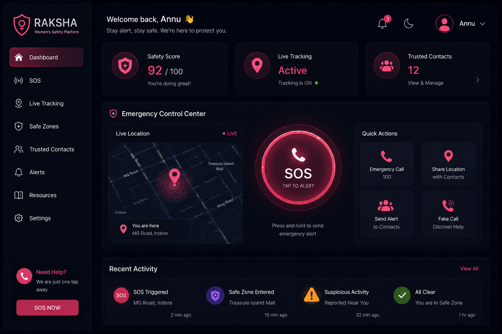

Raksha is a web-based emergency response ecosystem designed to provide reliable, real-time safety measures for women. The platform focuses on instant emergency tracking and streamlined communications during distress situations.
The application triggers an instant alarm matrix via a single-tap SOS interface. Utilizing browser geolocation parameters, the system maps out live, accurate coordinate strings and dispatches them straight to designated emergency contacts and local authorities without complex lag times.
Future development blueprints involve native audio detection algorithms to auto-trigger SOS via specific vocal keywords, alongside offline SMS fallback systems for zero-connectivity environments.